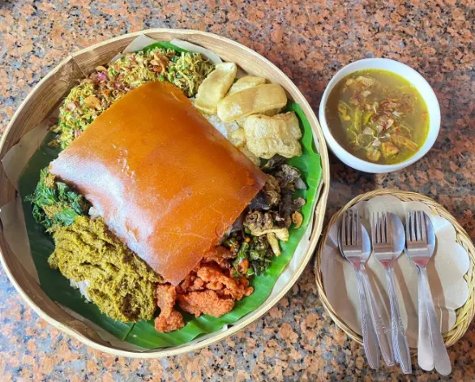

- pig belly
- coconut oil
- pepper
- basil
- garlic
- onion
- shrimp paste
- chili(optional)
- candlenut
- galangal
- ginger
- aromatic ginger
- tumeric
- orange peel
- lemongrass
- cilantro
- salt
- water
Recipe:
- Clean da meat with water and marinate da meat with nothing
- blender/ground all the shit except water and the meat, then add the hot coconut oil
- add it to da meat
- barbecue the shit
- garnish all you like